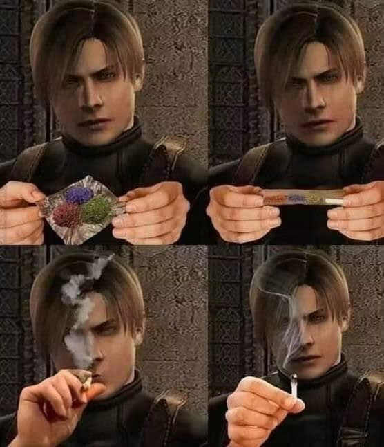
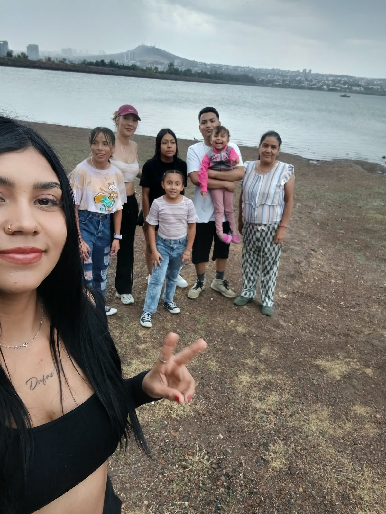
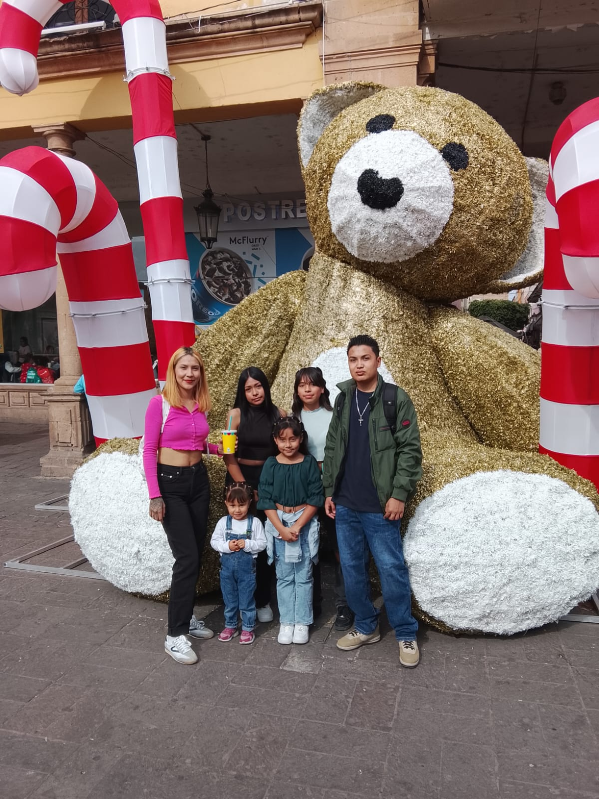
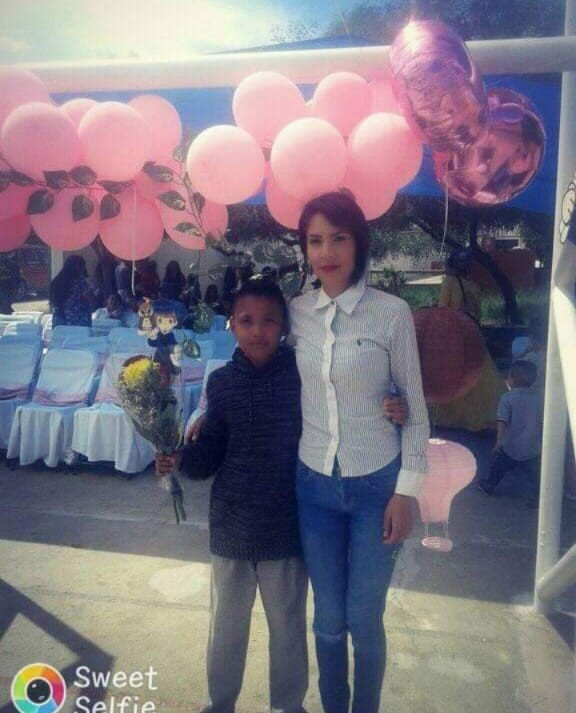
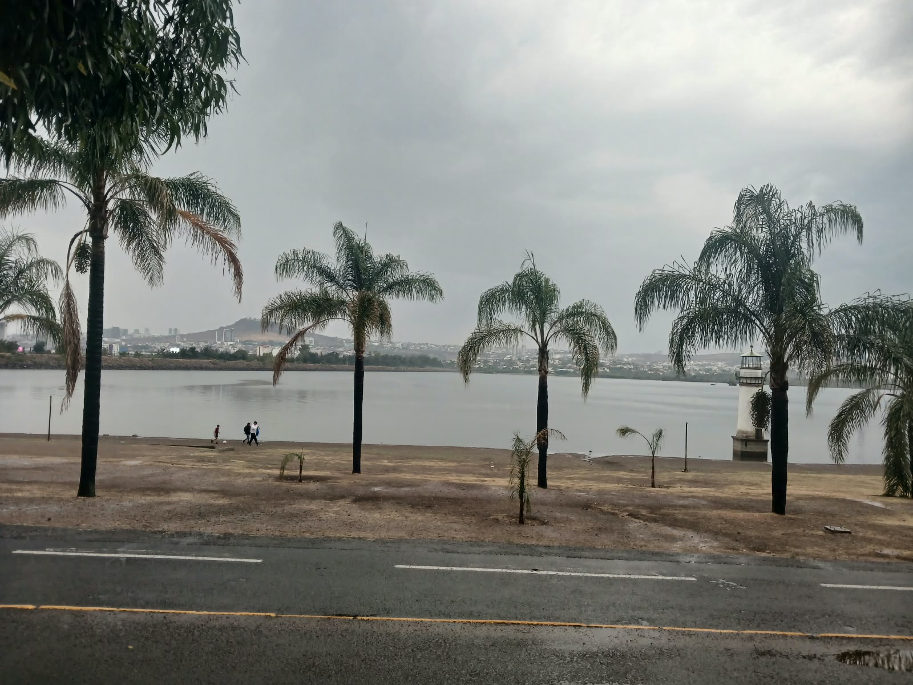
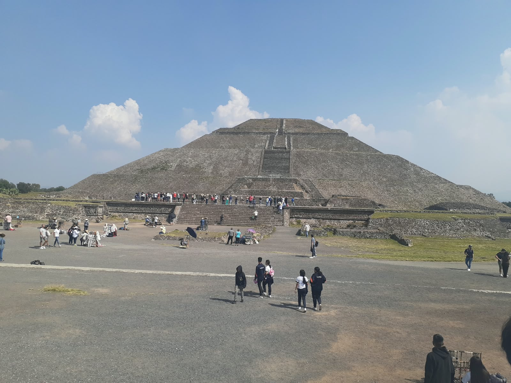
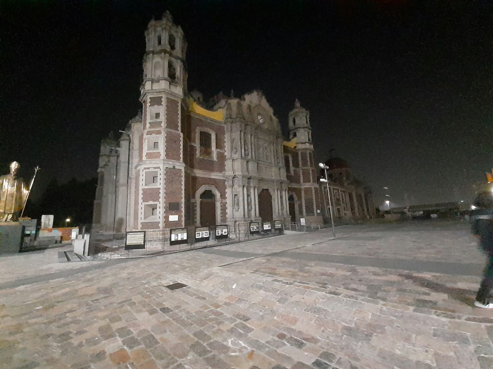

Mis memes favoritos
Aquí guardo algunos memes e imágenes me gustaron y por eso las guarde.

Mi familia
Algunas fotografías de mi familia y porque son importantes para mí.

El dia que fue por primera vez al metropolitano con mi familia.

El dia que mi tia me llevo al centro para que yo escogiera mi regalo de cumpleaños.

El dia que me gradue de la escuela.
Lugares que he visitado
También me gusta guardar fotografías de algunos lugares que he tenido la oportunidad de visitar.

metropolitano
Me gusto este lugar ya que te relaja y rentar las bicis y usarlas es lo mejor, bueno si la gente no usa la pasada de las bicis como banqueta seria mejor.

Pirámide del Sol
Fue un lugar muy chido hay habia de todo hasta recuerdos, aun me arrepiedo por no haber comprado el cuchillo de obdsidiana y no la katana de madera.

Antigua Basílica de Guadalupe
Es un templo con una joya arquitectónica del barroco construida a inicios del siglo XVIII.